| Symbol |
Description |
1EDN7550B | Description: Single-Channel EiceDRIVER With True Differential Inputs, 4V UVLO, +4/-8A, SOT-23-6
Keys: Driver, Dual MOSFET
Datasheet: https://www.infineon.com/dgdl/Infineon-1EDN7550B-DS-v02_00-EN.pdf?fileId=5546d46262b31d2e01635d9799ef264f |
1EDN8550B | Description: Single-Channel EiceDRIVER With True Differential Inputs, 8V UVLO, +4/-8A, SOT-23-6
Keys: Driver, Dual MOSFET
Datasheet: https://www.infineon.com/dgdl/Infineon-1EDN7550B-DS-v02_00-EN.pdf?fileId=5546d46262b31d2e01635d9799ef264f |
2ED21824S06J | Description: 650V Half Bridge Gate Driver with Integrated Bootstrap Diode, 2.5A drive current, SOIC-14
Keys: Gate Driver MOSFET IGBT
Datasheet: https://www.infineon.com/dgdl/Infineon-2ED2182-4-S06F-J-DataSheet-v02_10-EN.pdf?fileId=5546d4626cb27db2016cb8d7368a29e3 |
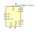
2EDL23N06PJXUMA1 | Description: 600V Half Bridge Gate Driver with OCP and Integrated Bootstrap Diode, +1.8A/-2.5A drive current, SOIC-14
Keys: Gate Driver MOSFET IGBT
Datasheet: https://www.infineon.com/dgdl/Infineon-2EDL23x06xx-DS-v02_01-EN.pdf?fileId=5546d46146d18cb4014738a20c5236f0 |
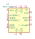
ACPL-336J | Description: 2.5A Gate Drive Optocoupler with Integrated LED Driver, Active Miller Clamp, DESAT Detection, and Fault & UVLO Status Feedback, SOIC-16
Keys: Gate Driver IGBT
Datasheet: https://docs.broadcom.com/docs/AV02-4391EN |
ACPL-P343 | Description: Gate Drive Optocoupler, Output Current 4.0/4.0A, Propagation Delay 200ns, SSO-6
Keys: MOSFET Driver IGBT Driver Optocoupler
Datasheet: https://docs.broadcom.com/docs/AV02-2928EN |
ACPL-W343 | Description: Gate Drive Optocoupler, Output Current 4.0/4.0A, Propagation Delay 200ns, SSO-6
Keys: MOSFET Driver IGBT Driver Optocoupler
Datasheet: http://www.avagotech.com/docs/AV02-2928EN |
AN34092B | Description: Single-Channel GaN-Tr High-Speed Gate Driver, Output Current 6.0A, 24V, -5V Negative Gate Voltage, HQFN-16
Keys: GaN Gate Driver
Datasheet: https://industrial.panasonic.com/content/data/SC/ds/ds4/AN34092B_E.pdf |
| BSP75N | Description: Self-Protected Low Side Driver with Temperature and Current Limit, SOT223
Keys: MOSFET ESD Overcurrent
Datasheet: https://www.infineon.com/dgdl/Infineon-BSP75N-DS-v01_04-en.pdf?fileId=db3a30431ed1d7b2011f471f5a0256d1 |
EL7202CN | Description: High Speed, Dual Channel Power MOSFET Driver, DIP-8/SOIC-8
Keys: Driver, Dual MOSFET
Datasheet: http://www.intersil.com/content/dam/Intersil/documents/el72/el7202-12-22.pdf |
EL7212CN | Description: High Speed, Dual Channel Power MOSFET Driver, DIP-8/SOIC-8
Keys: Driver, Dual MOSFET
Datasheet: http://www.intersil.com/content/dam/Intersil/documents/el72/el7202-12-22.pdf |
EL7222CN | Description: High Speed, Dual Channel Power MOSFET Driver, DIP-8/SOIC-8
Keys: Driver, Dual MOSFET
Datasheet: http://www.intersil.com/content/dam/Intersil/documents/el72/el7202-12-22.pdf |
FAN3268 | Description: Low-Voltage 18V PMOS-NMOS Bridge Driver, SOIC-8
Keys: Driver MOSFET
Datasheet: http://www.onsemi.com/pub/Collateral/FAN3268T_F085-D.PDF |
FAN3278 | Description: 8-27V PMOS-NMOS Bridge Driver, SOIC-8
Keys: Driver MOSFET
Datasheet: https://www.onsemi.com/pub/Collateral/FAN3278-D.pdf |
FAN7371 | Description: High-Current High-Side Gate Driver, 600V Vs, 4A Io, SOIC-8
Keys: high-side gate driver
Datasheet: https://www.onsemi.com/pub/Collateral/FAN7371-D.pdf |
FAN7388 | Description: 3 Half-Bridge Gate-Drive IC, 600V operation, Output Current 350/650mA, SOIC-20
Keys: 3 Phase Gate Driver
Datasheet: https://www.onsemi.com/pub/Collateral/FAN7388-D.pdf |
FAN7842 | Description: High and Low Side Gate Driver, 200V operation, Output Current 350/650mA, SOIC-8
Keys: Gate Driver
Datasheet: http://www.onsemi.com/pub/Collateral/FAN7842-D.pdf |
FAN7888 | Description: 3 Half-Bridge Gate-Drive IC, 200V operation, Output Current 350/650mA, SOIC-20
Keys: 3 Phase Gate Driver
Datasheet: http://www.onsemi.com/pub/Collateral/FAN7888-D.pdf |
FL5150MX | Description: IGBT and MOSFET, AC Phase Cut, Dimmer Controller, SSOP-10
Keys: dimmer
Datasheet: https://www.onsemi.com/pub/Collateral/FL5150-D.pdf |
FL5160MX | Description: IGBT and MOSFET, AC Phase Cut, Dimmer Controller, SSOP-10
Keys: dimmer
Datasheet: https://www.onsemi.com/pub/Collateral/FL5150-D.pdf |
HCPL-3120 | Description: Gate Drive Optocoupler, Output Current 2.5/2.5A, PDIP-8
Keys: MOSFET Driver IGBT Driver Optocoupler
Datasheet: https://docs.broadcom.com/docs/AV02-0161EN |
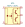
HCPL-314J | Description: Gate Drive Optocoupler, Output Current 0.4/0.4A, SOIC-16(12)
Keys: MOSFET Driver IGBT Driver Optocoupler
Datasheet: https://docs.broadcom.com/docs/AV02-0169EN |
HIP2100_DFN | Description: High Frequency Half Bridge Driver, Output Current 2.0A, 100V, DFN-8
Keys: Half Bridge Gate Driver
Datasheet: http://www.intersil.com/content/dam/Intersil/documents/hip2/hip2100.pdf |
HIP2100_EPSOIC | Description: High Frequency Half Bridge Driver, Output Current 2.0A, 100V, EPSOIC-8
Keys: Half Bridge Gate Driver
Datasheet: http://www.intersil.com/content/dam/Intersil/documents/hip2/hip2100.pdf |
HIP2100_QFN | Description: High Frequency Half Bridge Driver, Output Current 2.0A, 100V, QFN-16
Keys: Half Bridge Gate Driver
Datasheet: http://www.intersil.com/content/dam/Intersil/documents/hip2/hip2100.pdf |
HIP2100_SOIC | Description: High Frequency Half Bridge Driver, Output Current 2.0A, 100V, SOIC-8
Keys: Half Bridge Gate Driver
Datasheet: http://www.intersil.com/content/dam/Intersil/documents/hip2/hip2100.pdf |
HIP2101_DFN | Description: High Frequency Half Bridge Driver, TTL/CMOS inputs, Output Current 2.0A, 100V, DFN-8
Keys: Half Bridge Gate Driver
Datasheet: http://www.intersil.com/content/dam/Intersil/documents/hip2/hip2101.pdf |
HIP2101_EPSOIC | Description: High Frequency Half Bridge Driver, TTL/CMOS inputs, Output Current 2.0A, 100V, EPSOIC-8
Keys: Half Bridge Gate Driver
Datasheet: http://www.intersil.com/content/dam/Intersil/documents/hip2/hip2101.pdf |
HIP2101_QFN | Description: High Frequency Half Bridge Driver, TTL/CMOS inputs, Output Current 2.0A, 100V, QFN-16
Keys: Half Bridge Gate Driver
Datasheet: http://www.intersil.com/content/dam/Intersil/documents/hip2/hip2101.pdf |
HIP2101_SOIC | Description: High Frequency Half Bridge Driver, TTL/CMOS inputs, Output Current 2.0A, 100V, SOIC-8
Keys: Half Bridge Gate Driver
Datasheet: http://www.intersil.com/content/dam/Intersil/documents/hip2/hip2101.pdf |
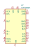
HIP4080A | Description: High Frequency Full Bridge FET Driver, Input Comparator, 2.5A, 80V, DIP-20/SOIC-20
Keys: Half Bridge Gate Driver
Datasheet: http://www.intersil.com/content/dam/Intersil/documents/hip4/hip4080a.pdf |
HIP4081A | Description: High Frequency Full Bridge FET Driver, 2.5A, 80V, DIP-20/SOIC-20
Keys: Half Bridge Gate Driver
Datasheet: http://www.intersil.com/content/dam/Intersil/documents/hip4/hip4080a.pdf |
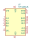
HIP4082xB | Description: 80V, 1.25A Peak Current H-Bridge FET Driver, SOIC-16
Keys: Driver H-bridge
Datasheet: https://www.renesas.com/www/doc/datasheet/hip4082.pdf |
HIP4082xP | Description: 80V, 1.25A Peak Current H-Bridge FET Driver, DIP-16
Keys: Driver H-bridge
Datasheet: https://www.renesas.com/www/doc/datasheet/hip4082.pdf |
| ICL7667 | Description: Dual Power MOSFET Driver, DIP-8/SOIC-8
Keys: MOSFET driver array
Datasheet: http://www.intersil.com/content/dam/Intersil/documents/icl7/icl7667.pdf |
IR2010 | Description: High and Low Side Driver, 200V, 3.0/3.0A, PDIP-14
Keys: Gate Driver
Datasheet: https://www.infineon.com/dgdl/ir2010.pdf?fileId=5546d462533600a4015355c48f901660 |
IR2010S | Description: High and Low Side Driver, 200V, 3.0/3.0A, SOIC-16W
Keys: Gate Driver
Datasheet: https://www.infineon.com/dgdl/ir2010.pdf?fileId=5546d462533600a4015355c48f901660 |
IR2011 | Description: High and Low Side Driver, 200V, 1.0/1.0A, PDIP-8/SOIC-8
Keys: Gate Driver
Datasheet: https://www.infineon.com/dgdl/ir2011.pdf?fileId=5546d462533600a4015355c49b831663 |
IR2085S | Description: High Speed, 100V, Self Oscillating 50% Duty Cycle, Half-Bridge Driver, 1.0/1.0A, SOIC-8
Keys: Oscillating Gate Driver
Datasheet: https://www.infineon.com/dgdl/Infineon-IR2085S-DS-v01_02-EN.pdf?fileId=5546d4625b62cd8a015bb0f752184828 |
IR2101 | Description: High and Low Side Driver, 600V, 210/360mA, PDIP-8/SOIC-8
Keys: Gate Driver
Datasheet: https://www.infineon.com/dgdl/ir2101.pdf?fileId=5546d462533600a4015355c7a755166c |
IR2102 | Description: High and Low Side Driver, 600V, 210/360mA, PDIP-8/SOIC-8
Keys: Gate Driver
Datasheet: https://www.infineon.com/dgdl/ir2101.pdf?fileId=5546d462533600a4015355c7a755166c |
IR2103 | Description: Half-Bridge Driver, 600V, 210/360mA, PDIP-8/SOIC-8
Keys: Gate Driver
Datasheet: https://www.infineon.com/dgdl/ir2103.pdf?fileId=5546d462533600a4015355c7b54b166f |
IR2104 | Description: Half-Bridge Driver, 600V, 210/360mA, PDIP-8/SOIC-8
Keys: Gate Driver
Datasheet: https://www.infineon.com/dgdl/ir2104.pdf?fileId=5546d462533600a4015355c7c1c31671 |
IR2106 | Description: High and Low Side Driver, 600V, 200/350mA, PDIP-8/SOIC-8
Keys: Gate Driver
Datasheet: https://www.infineon.com/dgdl/ir2106.pdf?fileId=5546d462533600a4015355c7cfc51673 |
IR21064 | Description: High and Low Side Driver, 600V, 200/350mA, PDIP-14/SOIC-14
Keys: Gate Driver
Datasheet: https://www.infineon.com/dgdl/ir2106.pdf?fileId=5546d462533600a4015355c7cfc51673 |
IR2108 | Description: Half-Bridge Driver, 600V, 210/350mA, PDIP-8/SOIC-8
Keys: Gate Driver
Datasheet: https://www.infineon.com/dgdl/ir2108.pdf?fileId=5546d462533600a4015355c7dc321676 |
IR21084 | Description: Half-Bridge Driver, 600V, 210/350mA, PDIP-14/SOIC-14
Keys: Gate Driver
Datasheet: https://www.infineon.com/dgdl/ir2108.pdf?fileId=5546d462533600a4015355c7dc321676 |
IR2109 | Description: Half-Bridge Driver, 600V, 200/350mA, PDIP-8/SOIC-8
Keys: Gate Driver
Datasheet: https://www.infineon.com/dgdl/ir2109.pdf?fileId=5546d462533600a4015355c7e85b1679 |
IR21091 | Description: Half-Bridge Driver, 600V, 200/350mA, PDIP-8/SOIC-8
Keys: Gate Driver
Datasheet: https://www.infineon.com/dgdl/ir21091.pdf?fileId=5546d462533600a4015355c7f66f167c |
IR21094 | Description: Half-Bridge Driver, 600V, 200/350mA, PDIP-14/SOIC-14
Keys: Gate Driver
Datasheet: https://www.infineon.com/dgdl/ir2109.pdf?fileId=5546d462533600a4015355c7e85b1679 |
IR2110 | Description: High and Low Side Driver, 500V, 2.0/2.0A, PDIP-14
Keys: Gate Driver
Datasheet: https://www.infineon.com/dgdl/ir2110.pdf?fileId=5546d462533600a4015355c80333167e |
IR2110S | Description: High and Low Side Driver, 500V, 2.0/2.0A, SOIC-16W
Keys: Gate Driver
Datasheet: https://www.infineon.com/dgdl/ir2110.pdf?fileId=5546d462533600a4015355c80333167e |
IR2111 | Description: Half-Bridge Driver, 600V, 250/500mA, PDIP-8/SOIC-8
Keys: Gate Driver
Datasheet: https://www.infineon.com/dgdl/ir2111.pdf?fileId=5546d462533600a4015355c810e51682 |
IR2112 | Description: High and Low Side Driver, 600V, 250/500mA, PDIP-14
Keys: Gate Driver
Datasheet: https://www.infineon.com/dgdl/ir2112.pdf?fileId=5546d462533600a4015355c81cb71685 |
IR2112S | Description: High and Low Side Driver, 500V, 250/500mA, SOIC-16W
Keys: Gate Driver
Datasheet: https://www.infineon.com/dgdl/ir2112.pdf?fileId=5546d462533600a4015355c81cb71685 |
IR2113 | Description: High and Low Side Driver, 600V, 2.0/2.0A, PDIP-14
Keys: Gate Driver
Datasheet: https://www.infineon.com/dgdl/ir2110.pdf?fileId=5546d462533600a4015355c80333167e |
IR2113S | Description: High and Low Side Driver, 500V, 2.0/2.0A, SOIC-16W
Keys: Gate Driver
Datasheet: https://www.infineon.com/dgdl/ir2110.pdf?fileId=5546d462533600a4015355c80333167e |
IR2114S | Description: Half-Bridge Gate Driver IC, 600V, 1.0/1.5A, SSOP-24
Keys: Gate Driver
Datasheet: https://www.infineon.com/dgdl/ir2114ss.pdf?fileId=5546d462533600a4015355c836cd168a |
IR2133 | Description: 600V, Vout 10-20V, PDIP-28
Keys: 3 Phase Gate Driver
Datasheet: https://www.infineon.com/dgdl/Infineon-IR2x33-IR2x35-DataSheet-v01_00-EN.pdf?fileId=5546d462533600a4015355c890ba169f |
IR2133S | Description: 600V, Vout 10-20V, SOIC-28
Keys: 3 Phase Gate Driver
Datasheet: https://www.infineon.com/dgdl/Infineon-IR2x33-IR2x35-DataSheet-v01_00-EN.pdf?fileId=5546d462533600a4015355c890ba169f |
IR2135 | Description: 600V, Vout 12-20V, PDIP-28
Keys: 3 Phase Gate Driver
Datasheet: https://www.infineon.com/dgdl/Infineon-IR2x33-IR2x35-DataSheet-v01_00-EN.pdf?fileId=5546d462533600a4015355c890ba169f |
IR2135S | Description: 600V, Vout 12-20V, SOIC-28
Keys: 3 Phase Gate Driver
Datasheet: https://www.infineon.com/dgdl/Infineon-IR2x33-IR2x35-DataSheet-v01_00-EN.pdf?fileId=5546d462533600a4015355c890ba169f |
IR2153 | Description: Self-Oscillating Half-Bridge Driver, 600V, PDIP-8/SOIC-8
Keys: Oscillating Gate Driver
Datasheet: https://www.infineon.com/dgdl/ir2153.pdf?fileId=5546d462533600a4015355c8c5fc16af |
IR21531 | Description: Self-Oscillating Half-Bridge Driver, 600V, PDIP-8/SOIC-8
Keys: Oscillating Gate Driver
Datasheet: https://www.infineon.com/dgdl/ir21531.pdf?fileId=5546d462533600a4015355c8d26316b3 |
IR2155 | Description: Self-Oscillating Half-Bridge Driver, 600V, 250/500mA, PDIP-8/SOIC-8
Keys: Oscillating Gate Driver
Datasheet: https://www.infineon.com/dgdl/ir2155.pdf?fileId=5546d462533600a4015355c8dec316b6 |
IR2181 | Description: High and Low Side Driver, 600V, 1.4/1.8A, PDIP-8/SOIC-8
Keys: Gate Driver
Datasheet: https://www.infineon.com/dgdl/ir2181.pdf?fileId=5546d462533600a4015355c93cdd16ce |
IR21814 | Description: High and Low Side Driver, 600V, 1.4/1.8A, PDIP-14/SOIC-14
Keys: Gate Driver
Datasheet: https://www.infineon.com/dgdl/ir2181.pdf?fileId=5546d462533600a4015355c93cdd16ce |
IR2183 | Description: Half-Bridge Driver, 600V, 1.4/1.8A, PDIP-8/SOIC-8
Keys: Gate Driver
Datasheet: https://www.infineon.com/dgdl/ir2183.pdf?fileId=5546d462533600a4015355c9490e16d1 |
IR21834 | Description: Half-Bridge Driver, 600V, 1.4/1.8A, PDIP-14/SOIC-14
Keys: Gate Driver
Datasheet: https://www.infineon.com/dgdl/ir2183.pdf?fileId=5546d462533600a4015355c9490e16d1 |
IR2184 | Description: Half-Bridge Driver, 600V, 1.4/1.8A, PDIP-8/SOIC-8
Keys: Gate Driver
Datasheet: https://www.infineon.com/dgdl/ir2184.pdf?fileId=5546d462533600a4015355c955e616d4 |
IR21844 | Description: Half-Bridge Driver, 600V, 1.4/1.8A, PDIP-14/SOIC-14
Keys: Gate Driver
Datasheet: https://www.infineon.com/dgdl/ir2184.pdf?fileId=5546d462533600a4015355c955e616d4 |
IR2213 | Description: High and Low Side Driver, 1200V, 1.7/2.0A, PDIP-14
Keys: Gate Driver
Datasheet: https://www.infineon.com/dgdl/Infineon-IR2213-DS-v00_02-EN.pdf?fileId=5546d462533600a4015355c9621716d8 |
IR2213S | Description: High and Low Side Driver, 1200V, 1.7/2.0A, SOIC-16W
Keys: Gate Driver
Datasheet: https://www.infineon.com/dgdl/Infineon-IR2213-DS-v00_02-EN.pdf?fileId=5546d462533600a4015355c9621716d8 |
IR2214S | Description: Half-Bridge Gate Driver IC, 1200V, 1.0/1.5A, SSOP-24
Keys: Gate Driver
Datasheet: https://www.infineon.com/dgdl/ir2114ss.pdf?fileId=5546d462533600a4015355c836cd168a |
IR2233 | Description: 1200V, Vout 10-20V, PDIP-28
Keys: 3 Phase Gate Driver
Datasheet: https://www.infineon.com/dgdl/Infineon-IR2x33-IR2x35-DataSheet-v01_00-EN.pdf?fileId=5546d462533600a4015355c890ba169f |
IR2233S | Description: 1200V, Vout 10-20V, SOIC-28
Keys: 3 Phase Gate Driver
Datasheet: https://www.infineon.com/dgdl/Infineon-IR2x33-IR2x35-DataSheet-v01_00-EN.pdf?fileId=5546d462533600a4015355c890ba169f |
IR2235 | Description: 1200V, Vout 12-20V, PDIP-28
Keys: 3 Phase Gate Driver
Datasheet: https://www.infineon.com/dgdl/Infineon-IR2x33-IR2x35-DataSheet-v01_00-EN.pdf?fileId=5546d462533600a4015355c890ba169f |
IR2235S | Description: 1200V, Vout 12-20V, SOIC-28
Keys: 3 Phase Gate Driver
Datasheet: https://www.infineon.com/dgdl/Infineon-IR2x33-IR2x35-DataSheet-v01_00-EN.pdf?fileId=5546d462533600a4015355c890ba169f |
IR2301 | Description: High and Low Side Driver, 600V, 200/350mA, PDIP-8/SOIC-8
Keys: Gate Driver
Datasheet: https://www.infineon.com/dgdl/ir2301.pdf?fileId=5546d462533600a4015355c97bb216dc |
IR2302 | Description: Half-Bridge Driver, 600V, 200/350mA, PDIP-8/SOIC-8
Keys: Gate Driver
Datasheet: https://www.infineon.com/dgdl/ir2302.pdf?fileId=5546d462533600a4015355c988b216de |
IR2304 | Description: Half-Bridge Driver, 600V, 60/130mA, PDIP-8/SOIC-8
Keys: Gate Driver
Datasheet: https://www.infineon.com/dgdl/ir2304.pdf?fileId=5546d462533600a4015355c9954a16e0 |
IR2308 | Description: Half-Bridge Driver, 600V, 200/350mA, PDIP-8/SOIC-8
Keys: Gate Driver
Datasheet: https://www.infineon.com/dgdl/ir2308.pdf?fileId=5546d462533600a4015355c9a2b816e2 |
IR25602S | Description: Half-Bridge Driver, 600V, 210/360mA, PDIP-8/SOIC-8
Keys: Gate Driver
Datasheet: https://www.infineon.com/dgdl/ir25602.pdf?fileId=5546d462533600a4015355c9d6c216eb |
IR25603 | Description: Self-Oscillating Half-Bridge Driver, 600V, 180/260mA, PDIP-8/SOIC-8
Keys: Oscillating Gate Driver
Datasheet: https://www.infineon.com/dgdl/ir25603.pdf?fileId=5546d462533600a4015355c9e46716ef |
IR25604S | Description: High and Low Side Driver, 600V, 200/350mA, SOIC-8
Keys: Gate Driver
Datasheet: https://www.infineon.com/dgdl/ir25604.pdf?fileId=5546d462533600a4015355c9f1ca16f1 |
IR25607S | Description: High and Low Side Driver, 600V, 2.0/2.0A, SOIC-16W
Keys: Gate Driver
Datasheet: https://www.infineon.com/dgdl/ir25607.pdf?fileId=5546d462533600a4015355ca0e7916f5 |
IR7106S | Description: High and Low Side Driver, 700V, 200/350mA, SOIC-8
Keys: Gate Driver
Datasheet: https://www.infineon.com/dgdl/ir7106s.pdf?fileId=5546d462533600a4015355d61a06182a |
IR7184S | Description: 700V Half-Bridge Driver, 1.9/2.3A, SOIC-8
Keys: Gate Driver
Datasheet: https://www.infineon.com/dgdl/ir7184s.pdf?fileId=5546d462533600a4015355d62230182c |
IR7304S | Description: 700V Half-Bridge Driver, 60/130mA, SOIC-8
Keys: Gate Driver
Datasheet: https://www.infineon.com/dgdl/ir7304s.pdf?fileId=5546d462533600a4015355d62a63182e |
IRS2001 | Description: High and Low Side Driver, 200V, 200/420mA, PDIP-8/SOIC-8
Keys: Gate Driver
Datasheet: https://www.infineon.com/dgdl/irs2001pbf.pdf?fileId=5546d462533600a401535675a760277e |
IRS2001M | Description: High and Low Side Driver, 200V, 290/600mA, MLPQ-14
Keys: Gate Driver
Datasheet: https://www.infineon.com/dgdl/irs2001mpbf.pdf?fileId=5546d462533600a4015356759e20277c |
IRS2003 | Description: Half-Bridge Driver, 200V, 290/600mA, PDIP-8/SOIC-8
Keys: Gate Driver
Datasheet: https://www.infineon.com/dgdl/irs2003pbf.pdf?fileId=5546d462533600a401535675afec2780 |
IRS2004 | Description: Half-Bridge Driver, 200V, 290/600mA, PDIP-8/SOIC-8
Keys: Gate Driver
Datasheet: https://www.infineon.com/dgdl/irs2004pbf.pdf?fileId=5546d462533600a401535675b86b2782 |
IRS2005M | Description: High and Low Side Driver, 200V, 290/600mA, MLPQ-14
Keys: Gate Driver
Datasheet: https://www.infineon.com/dgdl/Infineon-IRS2005S-DS-v02_00-EN.pdf?fileId=5546d462533600a4015364c4246229e1 |
IRS2005S | Description: High and Low Side Driver, 200V, 290/600mA, SOIC-8
Keys: Gate Driver
Datasheet: https://www.infineon.com/dgdl/Infineon-IRS2005S-DS-v02_00-EN.pdf?fileId=5546d462533600a4015364c4246229e1 |
IRS2008S | Description: 200-V Half-Bridge Driver With Shutdown Input, 200V, 290/600mA, SOIC-8
Keys: Gate Driver
Datasheet: https://www.infineon.com/dgdl/Infineon-IRS2008S-DS-v01_00-EN.pdf?fileId=5546d46259d9a4bf015a3e76b6361c1a |
IRS2011 | Description: High and Low Side Driver, 200V, 1.0/1.0A, PDIP-8/SOIC-8
Keys: Gate Driver
Datasheet: https://www.infineon.com/dgdl/irs2011pbf.pdf?fileId=5546d462533600a401535675c19f2784 |
IRS2101 | Description: High and Low Side Driver, 600V, 290/600mA, PDIP-8/SOIC-8
Keys: Gate Driver
Datasheet: https://www.infineon.com/dgdl/ir2101.pdf?fileId=5546d462533600a4015355c7a755166c |
IRS2103 | Description: Half-Bridge Driver, 600V, 290/600mA, PDIP-8/SOIC-8
Keys: Gate Driver
Datasheet: https://www.infineon.com/dgdl/irs2103.pdf?fileId=5546d462533600a4015356762b71279f |
IRS2104 | Description: Half-Bridge Driver, 600V, 290/600mA, PDIP-8/SOIC-8
Keys: Gate Driver
Datasheet: https://www.infineon.com/dgdl/irs2104.pdf?fileId=5546d462533600a40153567633f727a1 |
IRS2106 | Description: High and Low Side Driver, 600V, 290/600mA, PDIP-8/SOIC-8
Keys: Gate Driver
Datasheet: https://www.infineon.com/dgdl/irs2106.pdf?fileId=5546d462533600a4015356763aa527a3 |
IRS21064 | Description: High and Low Side Driver, 600V, 290/600mA, PDIP-14/SOIC-14
Keys: Gate Driver
Datasheet: https://www.infineon.com/dgdl/irs2106.pdf?fileId=5546d462533600a4015356763aa527a3 |
IRS2108 | Description: Half-Bridge Driver, 600V, 290/600mA, PDIP-8/SOIC-8
Keys: Gate Driver
Datasheet: https://www.infineon.com/dgdl/irs2108.pdf?fileId=5546d462533600a40153567649d627a8 |
IRS21084 | Description: Half-Bridge Driver, 600V, 290/600mA, PDIP-14/SOIC-14
Keys: Gate Driver
Datasheet: https://www.infineon.com/dgdl/irs2108.pdf?fileId=5546d462533600a40153567649d627a8 |
IRS2109 | Description: Half-Bridge Driver, 600V, 290/600mA, PDIP-8/SOIC-8
Keys: Gate Driver
Datasheet: https://www.infineon.com/dgdl/irs2109.pdf?fileId=5546d462533600a401535676508f27ab |
IRS21091 | Description: Half-Bridge Driver, 600V, 290/600mA, PDIP-8/SOIC-8
Keys: Gate Driver
Datasheet: https://www.infineon.com/dgdl/irs21091.pdf?fileId=5546d462533600a401535676573d27ae |
IRS21094 | Description: Half-Bridge Driver, 600V, 290/600mA, PDIP-8/SOIC-8
Keys: Gate Driver
Datasheet: https://www.infineon.com/dgdl/irs2109.pdf?fileId=5546d462533600a401535676508f27ab |
IRS2110 | Description: High and Low Side Driver, 500V, 2.0/2.0A, PDIP-14
Keys: Gate Driver
Datasheet: https://www.infineon.com/dgdl/irs2110.pdf?fileId=5546d462533600a40153567660ff27b0 |
IRS2110S | Description: High and Low Side Driver, 500V, 2.0/2.0A, SOIC-16W
Keys: Gate Driver
Datasheet: https://www.infineon.com/dgdl/irs2110.pdf?fileId=5546d462533600a40153567660ff27b0 |
IRS2111 | Description: Half-Bridge Driver, 600V, 290/600mA, PDIP-8/SOIC-8
Keys: Gate Driver
Datasheet: https://www.infineon.com/dgdl/irs2111pbf.pdf?fileId=5546d462533600a401535676679b27b3 |
IRS2112 | Description: High and Low Side Driver, 600V, 290/600mA, PDIP-14
Keys: Gate Driver
Datasheet: https://www.infineon.com/dgdl/irs2112pbf.pdf?fileId=5546d462533600a401535676702827b5 |
IRS2112S | Description: High and Low Side Driver, 500V, 290/600mA, SOIC-16W
Keys: Gate Driver
Datasheet: https://www.infineon.com/dgdl/irs2112pbf.pdf?fileId=5546d462533600a401535676702827b5 |
IRS2113 | Description: High and Low Side Driver, 600V, 2.0/2.0A, PDIP-14
Keys: Gate Driver
Datasheet: https://www.infineon.com/dgdl/irs2110.pdf?fileId=5546d462533600a40153567660ff27b0 |
IRS2113M | Description: High- and Low-Side Driver, 600V, 2.5/2.5A, MLPQ-14
Keys: Gate Driver
Datasheet: https://www.infineon.com/dgdl/irs2113mpbf.pdf?fileId=5546d462533600a40153567676a227b7 |
IRS2113S | Description: High and Low Side Driver, 500V, 2.0/2.0A, SOIC-16W
Keys: Gate Driver
Datasheet: https://www.infineon.com/dgdl/irs2110.pdf?fileId=5546d462533600a40153567660ff27b0 |
IRS21531D | Description: Self-Oscillating Half-Bridge Driver IC, 600V, 180/260mA, PDIP-8/SOIC-8
Keys: Oscillating Gate Driver
Datasheet: https://www.infineon.com/dgdl/irs2153d.pdf?fileId=5546d462533600a401535676951e27c3 |
IRS2153D | Description: Self-Oscillating Half-Bridge Driver IC, 600V, 180/260mA, PDIP-8/SOIC-8
Keys: Oscillating Gate Driver
Datasheet: https://www.infineon.com/dgdl/irs2153d.pdf?fileId=5546d462533600a401535676951e27c3 |
IRS2181 | Description: High and Low Side Driver, 600V, 1.4/1.8A, PDIP-8/SOIC-8
Keys: Gate Driver
Datasheet: https://www.infineon.com/dgdl/irs2181.pdf?fileId=5546d462533600a401535676c12b27d3 |
IRS21814 | Description: High and Low Side Driver, 600V, 1.4/1.8A, PDIP-14/SOIC-14
Keys: Gate Driver
Datasheet: https://www.infineon.com/dgdl/irs2181.pdf?fileId=5546d462533600a401535676c12b27d3 |
IRS21814M | Description: High- and Low-Side Driver, 600V, 1.9/2.3A, MLPQ-14
Keys: Gate Driver
Datasheet: https://www.infineon.com/dgdl/irs21814mpbf.pdf?fileId=5546d462533600a401535676c8a827d6 |
IRS2183 | Description: Half-Bridge Driver, 600V, 1.4/1.8A, PDIP-8/SOIC-8
Keys: Gate Driver
Datasheet: https://www.infineon.com/dgdl/irs2183.pdf?fileId=5546d462533600a401535676d20c27d8 |
IRS21834 | Description: Half-Bridge Driver, 600V, 1.4/1.8A, PDIP-14/SOIC-14
Keys: Gate Driver
Datasheet: https://www.infineon.com/dgdl/irs2183.pdf?fileId=5546d462533600a401535676d20c27d8 |
IRS2184 | Description: Half-Bridge Driver, 600V, 1.4/1.8A, PDIP-8/SOIC-8
Keys: Gate Driver
Datasheet: https://www.infineon.com/dgdl/irs2184.pdf?fileId=5546d462533600a401535676d8da27db |
IRS21844 | Description: Half-Bridge Driver, 600V, 1.4/1.8A, PDIP-14/SOIC-14
Keys: Gate Driver
Datasheet: https://www.infineon.com/dgdl/irs2184.pdf?fileId=5546d462533600a401535676d8da27db |
IRS21844M | Description: Half-Bridge Driver, 600V, 1.9/2.3A, MLPQ-14
Keys: Gate Driver
Datasheet: https://www.infineon.com/dgdl/irs21844mpbf.pdf?fileId=5546d462533600a401535676dfb027de |
IRS2186 | Description: High and Low Side Driver, 600V, 4A, PDIP-8/SOIC-8
Keys: gate driver
Datasheet: https://www.infineon.com/dgdl/irs2186pbf.pdf?fileId=5546d462533600a40153567716c427ed |
IRS21864 | Description: High and Low Side Driver, 600V, 4A, PDIP-14/SOIC-14
Keys: gate driver
Datasheet: https://www.infineon.com/dgdl/irs2186pbf.pdf?fileId=5546d462533600a40153567716c427ed |
IRS21867S | Description: High and Low Side Driver, 600V, 4.0/4.0A, SOIC-8
Keys: Gate Driver
Datasheet: http://www.infineon.com/dgdl/irs21867spbf.pdf?fileId=5546d462533600a4015356770e8327eb |
IRS2301S | Description: High and Low Side Driver, 600V, 200/350mA, SOIC-8
Keys: Gate Driver
Datasheet: https://www.infineon.com/dgdl/irs2301pbf.pdf?fileId=5546d462533600a40153567a7ec527fe |
IRS2302S | Description: Half-Bridge Driver, 600V, 200/350mA, SOIC-8
Keys: Gate Driver
Datasheet: https://www.infineon.com/dgdl/Infineon-IRS2302-DS-v02_01-EN.pdf?fileId=5546d462533600a40153567a87382800 |
IRS2304 | Description: Half-Bridge Driver, 600V, 290/600mA, PDIP-8/SOIC-8
Keys: Gate Driver
Datasheet: https://www.infineon.com/dgdl/irs2304spbf.pdf?fileId=5546d462533600a40153567a8fe72802 |
IRS2308 | Description: Half-Bridge Driver, 600V, 290/600mA, PDIP-8/SOIC-8
Keys: Gate Driver
Datasheet: https://www.infineon.com/dgdl/irs2308.pdf?fileId=5546d462533600a40153567a98ac2804 |
IRS25606S | Description: Half-Bridge Driver, 600V, 200/350mA, SOIC-8
Keys: Gate Driver
Datasheet: https://www.infineon.com/dgdl/ir25606.pdf?fileId=5546d462533600a4015355ca002316f3 |
IRS2890DS | Description: Half-Bridge Driver with Overcurrent Protection, 600V, 220/480mA, SOIC-14
Keys: Gate Driver
Datasheet: https://www.infineon.com/dgdl/Infineon-IRS2890DS-DS-v01_00-EN.pdf?fileId=5546d4625a888733015aad6fbc8a4bf4 |
ITS711L1 | Description: Smart High-Side Power Switch for Industrial Applications, Four Channels, Rds 200mΩ, SOIC-20W
Keys: driver fet quad
Datasheet: https://www.infineon.com/dgdl/Infineon-ITS711L1-DS-v01_03-en.pdf?fileId=db3a30432239cccd0122e560bae03c62 |
ITS716G | Description: Smart High-Side Power Switch for Industrial Applications, Four Channels, Rds 140mΩ, SOIC-20W
Keys: driver fet quad
Datasheet: https://www.infineon.com/dgdl/Infineon-ITS716G-DS-v01_01-en.pdf?fileId=db3a304412b407950112b428c2cf3e6d |
ITS724G | Description: Smart High-Side Power Switch for Industrial Applications, Four Channels, Rds 90m, SOIC-20W
Keys: driver fet quad
Datasheet: https://www.infineon.com/dgdl/Infineon-ITS724G-DS-v01_01-en.pdf?fileId=db3a304412b407950112b428d6083e90 |
L6491 | Description: High voltage high and low-side 4 A gate driver, SO-14
Keys: fet driver
Datasheet: https://www.st.com/resource/en/datasheet/l6491.pdf |
LM5109AMA | Description: Half-Bridge Gate Driver, Output Current 1.0A, 100V, SOIC-8
Keys: Half-Bridge Gate Driver
Datasheet: http://www.ti.com/lit/ds/symlink/lm5109a.pdf |
LM5109ASD | Description: Half-Bridge Gate Driver, Output Current 1.0A, 100V, WSON-8
Keys: Half-Bridge Gate Driver
Datasheet: http://www.ti.com/lit/ds/symlink/lm5109a.pdf |
LM5109BMA | Description: Half-Bridge Gate Driver, Output Current 1.0A, 100V, SOIC-8
Keys: Half-Bridge Gate Driver
Datasheet: http://www.ti.com/lit/ds/symlink/lm5109b.pdf |
LM5109BSD | Description: Half-Bridge Gate Driver, Output Current 1.0A, 100V, WSON-8
Keys: Half-Bridge Gate Driver
Datasheet: http://www.ti.com/lit/ds/symlink/lm5109b.pdf |
LM5109MA | Description: Half-Bridge Gate Driver, Output Current 1.0A, 100V, SOIC-8
Keys: Half-Bridge Gate Driver
Datasheet: http://www.ti.com/lit/ds/symlink/lm5109.pdf |
LTC4440EMS8 | Description: High-side, N-Channel, Mosfet driver, 80V input, -40C to +85C, MSOP-8
Keys: high-side mosfet-driver
Datasheet: https://www.analog.com/media/en/technical-documentation/data-sheets/4440fb.pdf |
LTC4440ES6 | Description: High-side, N-Channel, Mosfet driver, 80V input, -40C to +85C, SOT23-6
Keys: high-side mosfet-driver
Datasheet: https://www.analog.com/media/en/technical-documentation/data-sheets/4440fb.pdf |
LTC4440IMS8 | Description: High-side, N-Channel, Mosfet driver, 80V input, -40°C to +125°C, MSOP-8
Keys: high-side mosfet-driver
Datasheet: https://www.analog.com/media/en/technical-documentation/data-sheets/4440fb.pdf |
LTC4440IS6 | Description: High-side, N-Channel, Mosfet driver, 80V input, -40°C to +85°C, SOT23-6
Keys: high-side mosfet-driver
Datasheet: https://www.analog.com/media/en/technical-documentation/data-sheets/4440fb.pdf |
MAX15012AxSA | Description: High Frequency Half Bridge Driver, Output Current 2.0A, 175V, CMOS Input, SOIC-8
Keys: Half Bridge Gate Driver
Datasheet: https://datasheets.maximintegrated.com/en/ds/MAX15012-MAX15013B.pdf |
MAX15012BxSA | Description: High Frequency Half Bridge Driver, Output Current 2.0A, 175V, CMOS Input, SOIC-8
Keys: Half Bridge Gate Driver
Datasheet: https://datasheets.maximintegrated.com/en/ds/MAX15012-MAX15013B.pdf |
MAX15012CxSA | Description: High Frequency Half Bridge Driver, Output Current 2.0A, 175V, CMOS Input, SOIC-8
Keys: Half Bridge Gate Driver
Datasheet: https://datasheets.maximintegrated.com/en/ds/MAX15012-MAX15013B.pdf |
MAX15012DxSA | Description: High Frequency Half Bridge Driver, Output Current 2.0A, 175V, CMOS Input, SOIC-8
Keys: Half Bridge Gate Driver
Datasheet: https://datasheets.maximintegrated.com/en/ds/MAX15012-MAX15013B.pdf |
MAX15013AxSA | Description: High Frequency Half Bridge Driver, Output Current 2.0A, 175V, TTL Input, SOIC-8
Keys: Half Bridge Gate Driver
Datasheet: https://datasheets.maximintegrated.com/en/ds/MAX15012-MAX15013B.pdf |
MAX15013BxSA | Description: High Frequency Half Bridge Driver, Output Current 2.0A, 175V, TTL Input, SOIC-8
Keys: Half Bridge Gate Driver
Datasheet: https://datasheets.maximintegrated.com/en/ds/MAX15012-MAX15013B.pdf |
MAX15013CxSA | Description: High Frequency Half Bridge Driver, Output Current 2.0A, 175V, TTL Input, SOIC-8
Keys: Half Bridge Gate Driver
Datasheet: https://datasheets.maximintegrated.com/en/ds/MAX15012-MAX15013B.pdf |
MAX15013DxSA | Description: High Frequency Half Bridge Driver, Output Current 2.0A, 175V, TTL Input, SOIC-8
Keys: Half Bridge Gate Driver
Datasheet: https://datasheets.maximintegrated.com/en/ds/MAX15012-MAX15013B.pdf |
| MC33152 | Description: High Speed Dual MOSFET Drivers, 1.5A, -40 to 125C, DIP-8/SOIC-8
Keys: Driver, Dual MOSFET
Datasheet: https://www.onsemi.com/pub/Collateral/MC34152-D.PDF |
| MC34152 | Description: High Speed Dual MOSFET Drivers, 1.5A, 0 to 70C, DIP-8/SOIC-8
Keys: Driver, Dual MOSFET
Datasheet: https://www.onsemi.com/pub/Collateral/MC34152-D.PDF |
MCP1415 | Description: 1.5A High speed power MOSFET driver with inverting output, SOT-23-5
Keys: mosfet gate driver
Datasheet: http://ww1.microchip.com/downloads/en/DeviceDoc/20002092F.pdf |
MCP1415R | Description: 1.5A High speed power MOSFET driver with inverting output, SOT-23-5
Keys: mosfet gate driver
Datasheet: http://ww1.microchip.com/downloads/en/DeviceDoc/20002092F.pdf |
MCP1416 | Description: 1.5A High speed power MOSFET driver with non-inverting output, SOT-23-5
Keys: mosfet gate driver
Datasheet: http://ww1.microchip.com/downloads/en/DeviceDoc/20002092F.pdf |
MCP1416R | Description: 1.5A High speed power MOSFET driver with non-inverting output, SOT-23-5
Keys: mosfet gate driver
Datasheet: http://ww1.microchip.com/downloads/en/DeviceDoc/20002092F.pdf |
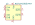
MCP14A0303xMNY | Description: Dual 3A-Peak MOSFET Driver, inverting outputs, DFN-8
Keys: Driver, Dual MOSFET
Datasheet: http://ww1.microchip.com/downloads/en/DeviceDoc/MCP14A0303_4_5-Data-Sheet-20006046A.pdf |
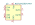
MCP14A0304xMNY | Description: Dual 3A-Peak MOSFET Driver, non-inverting outputs, DFN-8
Keys: Driver, Dual MOSFET
Datasheet: http://ww1.microchip.com/downloads/en/DeviceDoc/MCP14A0303_4_5-Data-Sheet-20006046A.pdf |
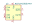
MCP14A0305xMNY | Description: Dual 3A-Peak MOSFET Driver, inverting/non-inverting outputs, DFN-8
Keys: Driver, Dual MOSFET
Datasheet: http://ww1.microchip.com/downloads/en/DeviceDoc/MCP14A0303_4_5-Data-Sheet-20006046A.pdf |
MCP14A0901xMNY | Description: Dual 9A-Peak MOSFET Driver, inverting outputs, DFN-8
Keys: Driver, Dual MOSFET
Datasheet: http://ww1.microchip.com/downloads/en/DeviceDoc/MCP14A0901_2-Data-Sheet-20006183A.pdf |
MCP14A0902xMNY | Description: Dual 9A-Peak MOSFET Driver, non-inverting outputs, DFN-8
Keys: Driver, Dual MOSFET
Datasheet: http://ww1.microchip.com/downloads/en/DeviceDoc/MCP14A0901_2-Data-Sheet-20006183A.pdf |
MCP14A1201xMNY | Description: Dual 12A-Peak MOSFET Driver, inverting outputs, DFN-8
Keys: Driver, Dual MOSFET
Datasheet: http://ww1.microchip.com/downloads/en/DeviceDoc/MCP14A1201-Family-Data-Sheet-DS20006228A.pdf |
MCP14A1202xMNY | Description: Dual 12A-Peak MOSFET Driver, non-inverting outputs, DFN-8
Keys: Driver, Dual MOSFET
Datasheet: http://ww1.microchip.com/downloads/en/DeviceDoc/MCP14A1201-Family-Data-Sheet-DS20006228A.pdf |
MIC4426 | Description: Dual 1.5A-Peak Low-Side MOSFET Driver, DIP-8/SOIC-8/MSOP-8
Keys: Driver, Dual MOSFET
Datasheet: http://www.intersil.com/content/dam/Intersil/documents/el72/el7202-12-22.pdf |
MIC4427 | Description: Dual 1.5A-Peak Low-Side MOSFET Driver, DIP-8/SOIC-8/MSOP-8
Keys: Driver, Dual MOSFET
Datasheet: http://ww1.microchip.com/downloads/en/DeviceDoc/mic4426.pdf |
MIC4428 | Description: Dual 1.5A-Peak Low-Side MOSFET Driver, DIP-8/SOIC-8/MSOP-8
Keys: Driver, Dual MOSFET
Datasheet: http://ww1.microchip.com/downloads/en/DeviceDoc/mic4426.pdf |
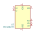
MIC4604YM | Description: 85V Half-Bridge MOSFET Driver with up to 16V Programmable Gate Drive, SOIC-8
Keys: Half-Bridge Gate Driver
Datasheet: http://ww1.microchip.com/downloads/en/DeviceDoc/20005852A.pdf |
NCD5702 | Description: High Current IGBT Gate, +4/-6A, SOIC-16
Keys: igbt gate driver
Datasheet: https://www.onsemi.com/pub/Collateral/NCD5702-D.PDF |
| NCV8402xST | Description: Self-Protected Low Side Driver with Temperature and Current Limit, SOT223
Keys: MOSFET ESD Overcurrent
Datasheet: https://www.onsemi.com/pub/Collateral/NCV8402-D.PDF |
PE29101 | Description: UltraCMOS High-Speed FET Driver, 40 MHz, Output Current 2.0A/4.0A, 80V, Half Bridge, Low Side Output, CSP-16
Keys: GaN Gate Driver
Datasheet: http://www.psemi.com/pdf/datasheets/pe29101ds.pdf |
PE29102 | Description: UltraCMOS High-Speed FET Driver, 40 MHz, Output Current 2.0A/4.0A, 80V, Half Bridge, Phase Control, CSP-16
Keys: GaN Gate Driver
Datasheet: http://www.psemi.com/pdf/datasheets/pe29102ds.pdf |
PM8834 | Description: 4A dual low-side MOSFET driver, SOIC-8
Keys: mosfet driver
Datasheet: http://www.st.com/resource/en/datasheet/pm8834.pdf |
PM8834M | Description: 4A dual low-side MOSFET driver, MSOP-8
Keys: mosfet driver
Datasheet: http://www.st.com/resource/en/datasheet/pm8834.pdf |
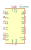
SM72295MA | Description: Full Bridge Gate Driver with integrated Current Sense Amplifier, 3A, 115V, SOIC-28
Keys: Full Bridge Gate Driver
Datasheet: http://www.ti.com/lit/gpn/sm72295 |
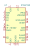
STGAP1AS | Description: Galvanically isolated 5 A advanced single gate driver, Dual Output, Miller Clamp, Sense, Desaturation, UVLO, OVLO, SPI, AEC-Q100, SOIC-24
Keys: isolated fet driver
Datasheet: https://www.st.com/resource/en/datasheet/stgap1as.pdf |
STGAP2SCM | Description: Galvanically isolated 4 A single gate driver, Single Output, Miller Clamp, SOIC-8
Keys: isolated fet driver
Datasheet: https://www.st.com/resource/en/datasheet/stgap2s.pdf |
STGAP2SM | Description: Galvanically isolated 4 A single gate driver, Dual Output, SOIC-8
Keys: isolated fet driver
Datasheet: https://www.st.com/resource/en/datasheet/stgap2s.pdf |
TC4421 | Description: 9A High-Speed inverting MOSFET Driver
Keys: MOSFET IGBT driver
Datasheet: http://ww1.microchip.com/downloads/en/DeviceDoc/20001420F.pdf |
TC4422 | Description: 9A High-Speed non-inverting MOSFET Driver
Keys: MOSFET IGBT driver
Datasheet: http://ww1.microchip.com/downloads/en/DeviceDoc/20001420F.pdf |
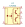
TLP250 | Description: Gate Drive Optocoupler, Output Current 1.5/1.5A, DIP-8
Keys: MOSFET Driver IGBT Driver Optocoupler
Datasheet: http://toshiba.semicon-storage.com/info/docget.jsp?did=16821&prodName=TLP250 |
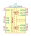
UCC21520ADW | Description: Isolated Dual-Channel Gate Driver, Output Current 4.0/6.0A, 5.7kV Isolation, 5V UVLO, SOIC-16W
Keys: Dual Isolated Gate Driver
Datasheet: http://www.ti.com/lit/ds/symlink/ucc21520.pdf |
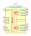
UCC21520DW | Description: Isolated Dual-Channel Gate Driver, Output Current 4.0/6.0A, 5.7kV Isolation, 8V UVLO, SOIC-16W
Keys: Dual Isolated Gate Driver
Datasheet: http://www.ti.com/lit/ds/symlink/ucc21520.pdf |
UCC27714D | Description: High-Speed, 600-V High-Side Low-Side Gate Driver, SOIC-14
Keys: gate driver bootstrap
Datasheet: http://www.ti.com/lit/ds/symlink/ucc27714.pdf |
ZXGD3001E6 | Description: 9A (peak) Gate driver, 12V, 3ns delay, SOT-23-6
Keys: gate driver
Datasheet: http://www.diodes.com/_files/datasheets/ZXGD3001E6.pdf |
ZXGD3002E6 | Description: 9A (peak) Gate driver, 20V, 2ns delay, SOT-23-6
Keys: gate driver
Datasheet: http://www.diodes.com/_files/datasheets/ZXGD3002E6.pdf |
ZXGD3003E6 | Description: 5A (peak) Gate driver, 40V, 2ns delay, SOT-23-6
Keys: gate driver
Datasheet: http://www.diodes.com/_files/datasheets/ZXGD3003E6.pdf |
ZXGD3004E6 | Description: 8A (peak) Gate driver, 40V, 1ns delay, SOT-23-6
Keys: gate driver
Datasheet: http://www.diodes.com/_files/datasheets/ZXGD3004E6.pdf |
ZXGD3006E6 | Description: 40V 10A gate driver, SOT-23-6
Keys: mosfet igbt driver buffer
Datasheet: https://www.diodes.com/assets/Datasheets/ZXGD3006E6.pdf |
ZXGD3009E6 | Description: 2A (peak) Gate driver, 40V, SOT-23-6
Keys: gate driver
Datasheet: https://www.diodes.com/assets/Datasheets/ZXGD3009E6.pdf |